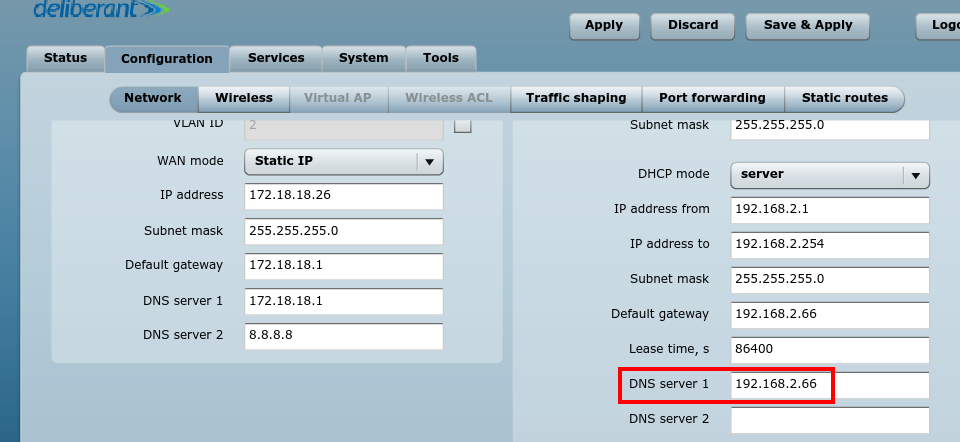

This post is only for educational purposes and use the workaround described here at your own risk !
Though I have a premium account with my broadband provider and I can browse the internet by logging in. But out of curiosity, I am always searching for a workout through which I can avoid the login part and use the internet off the records. This situation is pretty common. You find yourself at places like public Wi-Fi zones, McDonalds, Hotel Rooms etc. with your Wi-Fi card detecting open networks. You immediately jump on to connect to it and fire a URL into your browser and Er? What’s this:

A login screen appears no matter what URL you try to access. These are called as Captive Portals. What you can do now ? Spend a few bucks ?  Eh, can’t I bypass this? And, the answer is yes
Eh, can’t I bypass this? And, the answer is yes 
The whole process breaks down to the following steps:
- Check how vulnerable your network is
- Appying the hack
Vulnerability testing
I have a wireless broadband connection. The wireless signal is captured by an APC propeller and then I am provided with an ethernet cable to plug into my machine. The APC is generally provided after factory reset and serves as a router itself.
I logged off my user account and made the following observations:
I cannot ping a webserver.
$ ping example.com
PING example.com (93.184.216.34) 56(84) bytes of data.
From 103.206.248.193 icmp_seq=1 Destination Net Prohibited
From 103.206.248.193 icmp_seq=2 Destination Net Prohibited
From 103.206.248.193 icmp_seq=3 Destination Net ProhibitedHere one thing you should notice that the reply
is from 103.206.248.193. This is the DNS Server used by my broadband provider. I tried pinging the same but no avail. The DNS queries are fowarded by another server. Now I need to find this mysterious server. So, one thing is sure for now, ICMP packet transmission is not allowed. So, I cannot do ICMP tunneling.
I further tried resolving a domain name and it worked like charm. Note that pinging and resolving are not the same things !
$ nslookup example.com
Server: 127.0.1.1
Address: 127.0.1.1#53
Non-authoritative answer:
Name: example.com
Address: 93.184.216.34Now, you should know that the DNS protocol runs over the UDP protocol. So, I suspected that maybe UDP packets transmission is allowed since DNS is resolving fine. So, I used netcat to run a echo check over an VPN server running over UDP(port 53).
$ echo -e "\x38\x01\x00\x00\x00\x00\x00\x00\x00" | timeout 10 nc -u 176.126.237.217 53 | cat -v
# No-responseEish ? UDP packets are also blocked too. So, I cannot connect to a VPN service running over UDP :/ So, here we are cut with the options. But wait, we can still resolve DNS queries, hell yeah ! So, we need to find a way to craft the DNS query packets to carry the TCP payload (which is blocked by default). And, this evil abuse of the DNS protocol is called as DNS Tunneling It’s not evil for us, though 
Finding the mysterious server
Well, this step is not required for establishing the tunnel. But there is no harm in finding it. This can be easily found by doing a newtork scan by arp-scan tool.
$ arp-scan -I eth0 --localnet
Interface: eth0, datalink type: EN10MB (Ethernet)
Starting arp-scan 1.8.1 with 256 hosts (http://www.nta-monitor.com/tools/arp-scan/)
192.168.2.66 00:19:3b:08:78:b6 Wilibox Deliberant Group LLC
1 packets received by filter, 0 packets dropped by kernel
Ending arp-scan 1.8.1: 256 hosts scanned in 1.384 seconds (184.97 hosts/sec). 1 respondedYou can see 192.168.2.66 is on the network and it’s the APC router(in your case this may be any other router) which is indicated by the manufacturer details. Just to make sure it is, I logged into its admin interface using the default credentials by checking the manufacturer website. As I said earlier they did a factory reset of the APC. In my case, as the manufacturer is Deliberant and the default credentials are known to be admin:admin01. And, the following confirms it:

Applying the hack
Personally, I don’t like the term hack ! but I’ll cope with it ;) For doing DNS tunneling, you need to understand how this is going to work. So, basically when you browse the internet you request info and a response is provided to you. But here I can make only DNS requests, neither TCP, UDP, ICMP etc.
Under the hood, I need to hide the request payload into DNS packets.
- I will craft a DNS packet carrying request payload and send it.
- A DNS server will decode this payload for me, fetch the response and encode it back to the DNS packet and finally return the packet.
Astonishing, isn’t it ? It will be appear as we are making only DNS queries to the middle parties as we are encapsulating things in a canny way. Probably now, you must have sensed that we need someone on the other end to answer these crafted DNS queries for us, yeah we need our own DNS server !
Setup requirements
- A registered domain. In my case, I will be using :
black-perl.in. You can register a free domain with services like dot.tk etc. - A server with a public IP not running any DNS services ( check that port
53). I am using Digital Ocean for this, and this is my referral link, in case your’e interested in setting up one for you !
Now, you should know the basics of Domain Management and types of DNS records. Google a bit, and come back here later on ! We will be needing a subdomain delegated to our nameserver. Let’s set this up:
- In my case the subdomain is
hack.black-perl.inand the nameserver domain isdns.black-perl.in. - Add an
A recordfordns.black-perl.into point to your public server IP address. - Add a
NS recordfor subzonehack.black-perl.inpointing todns.black-perl.in.
What it means? If somebody query for <some-string>.hack.black-perl.in , then these queries are answered by our canning nameserver dns.black-perl.in.
Let’s move forward, we talked about encoding/decoding payloads. It’s PITA to implement this functionality, but we won’t! There’s a piece of open source software out there called as Iodine. We need to do the following:
-
Server end :
$ iodined -f -c -P pass -n <server-ip> 10.0.0.1 hack.black-perl.inPass in your server IP and subdomain created earlier.
Here, -f makes the Iodine server to run in foreground and -P is used to provide a password string that the client is going to provide while connecting. 10.0.0.1 is the other end of the tunnel interface to be created. The client(our machine) will be having 10.0.0.2 as it’s IP Address.
-
Client end:
$ iodine -f -P pass 192.168.2.66 hack.black-perl.in
. .
. .
. .
Connection setup complete, transmitting data.You can skip 192.168.2.66 (mysterious server we found before) from the above command. This is basically the DNS we are tunneling through. You can use 8.8.8.8 (Google’s DNS) or something else. But, in my situation I am forced to use this DNS by my broadband provider and this will be automatically forced in case you skip it. Upon successful connection, run ifconfig and you will observe a tunnel dns0 is created.
dns0 Link encap:UNSPEC HWaddr 00-00-00-00-00-00-00-00-00-00-00-00-00-00-00-00
inet addr:10.0.0.2 P-t-P:10.0.0.2 Mask:255.255.255.224
UP POINTOPOINT RUNNING NOARP MULTICAST MTU:1130 Metric:1
RX packets:0 errors:0 dropped:0 overruns:0 frame:0
TX packets:0 errors:0 dropped:0 overruns:0 carrier:0
collisions:0 txqueuelen:500
RX bytes:0 (0.0 B) TX bytes:0 (0.0 B)Now, let’s create a SOCKS proxy for using this tunnel.
$ ssh -D 8080 user@10.0.0.1The user refers to your server user and our server IP is aliased as 10.0.0.1 due to the establishment of dns0 tunnel.
Now, set the proxy to be 127.0.0.1 with port 8080 and type Socks5 and viola ! you are done.
Note: Some of the above commands are required to be run using sudo , i.e you require root privileges. I omitted it to keep things less verbose. The speed obtained is very less and these type of connections can mostly be used to open a SSH connection or browsing text based sites. I myself get around 5 KBps speed and managed to open the website of the IPhone jailbreak inventor guy George Hotz.